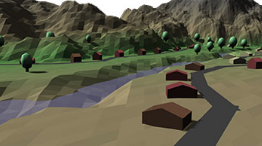
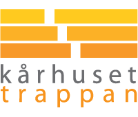

Education
2014 Sep - 2015 Jun
Computer Science at Stanford University
Stanford, United States Through the Stanford-Linköping international exchange program, I studied courses, mainly in computer graphics and web.
2011 Aug - 2016 Nov
M.Sc. in Media Technology at Linköping University
Norrköping, Sweden Achieved Bachelors degree with GPA 5.0 (max 5.0).
2010 Jan - 2011 Jun
Music and sound design at Mittuniversitetet
Distance studies, Sweden My greatest passion at the time, but I realized I wanted more tech.Jobs
2016 Aug - 2016 Sep
Visualization Developer at American Museum of Natural History
New York, United States After my master thesis work I was hired an extra month to develop a visualization of NASA's OSIRIS-REx mission within the software OpenSpace. The work resulted in a public event in the Hayden Planetarium with people from NASA narrating the simulation of the mission. C++14, OpenGL, GLSL, Lua
2015 Nov - 2016 Mar
Research Engineer at Software Center
Linköping, Sweden Besides my fifth year studies, I worked within a research project implementing different approaches for visualizing continuous integration on the web. The project was a collaboration between Linköping University and Ericsson. JavaScript, D3.js, Node.js, Heroku, MeteorJS
2015 Jun - 2015 Aug
In-car app developer at Volvo Cars
Göteborg, Sweden I worked within one of the scrum teams developing in-car apps used in the latest (2015) model of XC90. My most appreciated contributions was within the framework code base, where I refactored and separated map related logic of different concerns. JavaScript, QML, Qt, C++
2014 May - 2014 Jul
Technical product developer at SICK IVP
Linköping, Sweden I extended a 3D data monitoring system by implementing a view cube based on a designer's mockup. I also helped the RnD team by generating test images using Python and the Blender API. Java, OpenGL, GLSL, Python, Blender
2012 Aug - 2013 Mar
Math tutor at ITN, Linköping University
Norrköping, Sweden Together with another student, I held a two hour session every week for first year engineering students tutoring course material from basic math, calculus and linear algebra.Projects
2016 Mar - 2016 Sep
Master thesis: Virtual globe rendering in OpenSpace
New York, United States Together with a fellow student, I designed and implemented a virtual globe rendering system. The system supports dynamic mesh and texture level-of-detail, out-of-core rendering of large texture datasets, multiple heightmaps/texture layers and dynamic recompilation of shaders for on-the-fly toggling of texture layers. This project was our Master' thesis project, done at the American Museum of Natural History in New York, supervised by director of astrovisualization Carter Emmart. Checkout: Code C++14, OpenGL, GLSL, GDAL, Lua
2015 Dec - 2016 Mar
Land Generator
Procedural generation of a piece of land containing mountains, water, simple road networks, houses, trees and buildings. Simplex Noise is used as a basis for the deterministic generation of the environment. Checkout: Demo | Code | Project writeup JavaScript, THREE.js

2015 Sep - 2015 Dec
lithereviews.se
A user authorized web app where students of Linköping University can view course statistics and anonymously share thoughts about courses. LitheReviews was developed as a spare time project besides my studies. Checkout: Code | Anonymous voting in LitheReviews JavaScript, MongoDB, Express.js, AngularJS, Node.js, HerokuExtracurricular
2013 Sep - 2014 Apr
Lead technician at Media Technology career fair days
Norrköping, Sweden In a team of twelve students arranging the Media Technology career fair days, I was responsible for all rented tech (sound system, projectors, lights, etc) along with live streaming the talks.
2011 Sep - 2013 Sep
Sound technician at Student's union house
Norrköping, Sweden I helped artists rig their instruments, sound check and mixing live during performances. I also taught interested students how to do these things.

Other merits
- Granted the Teknologie Doktor Tryggve Holms stipend (13 500 SEK), 2014
- Granted the Norrköping Polytekniska Stipend (10 000 SEK), 2014
- Granted price Orange Cube for most creative project, Linköping University, Media Technology, 2012